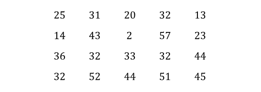

2 Descriptive Statistics
Learning objectives:
- Identify various ways to present collected data from survey of secondary sources
- Use appropriate data presentation for a qualitative and quantitative data
- Calculate the measures of central tendency, measure of variation, measure of skewness and measure of position for ungrouped data.
2.1 Introduction
When conducting a statistical study, the researcher must gather data for the variable under study. For example, if a researcher wishes to study the number of road accidents in Malaysia for the past 2 years, he or she must gather the data from various departments. To describe the situation, draw conclusions, or make inferences about the event, the researcher must organize the data and present it in some meaningful way.

The data can be presented in term of graphical approach or table and numerical descriptive measure for both qualitative dan quantitative data.
2.2 Organizing Data
Charts and graphs
- Frequency distributions are good ways to present the essential aspects of data collections in concise and understandable terms
- Pictures are always more effective in displaying large data collections
Histogram
- Frequently used to graphically present interval and ratio data
- The adjacent bars indicate that a numerical range is being summarized by indicating the frequencies in arbitrarily chosen classes
Frequency Polygon
- Another common method for graphically presenting interval and ratio data
- To construct a frequency polygon mark the frequencies on the vertical axis and the values of the variable being measured on the horizontal axis, as with the histogram.
- If the purpose of presenting is to compare with other distributions, the frequency polygon provides a good summary of the data
Ogive
- A graph of a cumulative frequency distribution
- Ogive is used when one wants to determine how many observations lie above or below a certain value in a distribution.
- First cumulative frequency distribution is constructed
- Cumulative frequencies are plotted at the upper-class limit of each category
- Ogive can also be constructed for a relative frequency distribution.
Pie Chart
- The pie chart is an effective way of displaying the percentage breakdown of data by category.
- The size of angle (°) is determined based on the frequency of group/category
- Useful if the relative sizes of the data components are to be emphasized Pie charts also provide an effective way of presenting ratio- or interval-scaled data after they have been organized into categories
- How to compute angle/degree? \[ x^{\circ} = \frac{f}{\sum{x}} \times 360 \]
Bar Charts
- Another common method for graphically presenting nominal and ordinal scaled data
- One bar is used to represent the frequency for each category
- The bars are usually positioned vertically with their bases located on the horizontal axis of the graph
- The bars are separated, and this is why such a graph is frequently used for nominal and ordinal data – the separation emphasize the plotting of frequencies for distinct categories
Stem and Leaf
A stem and leaf plot is a data plot that uses part of a data value as the stem and part of the data value as the leaf to form groups or classes.

2.3 Numerical descriptive measures (ungrouped)
- Measures of central tendency (mean, median, mode)
- Measure of variation (range, standard deviation, variance, coefficient of variation
- Measure of skewness
- Measures of Position (Q1, Q2, and Q3)
2.3.1 Measures of Central Tendency
Mean
The mean is the quotient of the sum of the values and the total number of values. The symbol \(\bar{x}\) is used for sample mean and is given by the following formula:
\[ \bar{x} = \frac{x_1 + x_2 + x_3 + ... + x_{n-1} + x_n}{n} = \frac{\sum{x}}{n} \] For a population, the Greek letter \(\mu\) (mu) is used for the mean.
\[ \bar{X} = \frac{X_1 + X_2 + X_3 + ... + X_{n-1} + X_N}{N} = \frac{\sum{X}}{N} \]
Example 2.1
The number of calls that a local police department responded to for a sample of 9 months is shown. Find the mean.
Answer
\[ \begin{aligned} \bar{x} = \frac{\sum{x}}{n} &= \frac{475+447+440+761+993+1052+783+671+621}{9} \\ &= \frac{6243}{9} \approx 693.7 \end{aligned} \]
Interpretation: On average, the number of calls responded by local police department is approximately 694 calls.
Example 2.2
A climatologist recorded daily temperature in Sungai Petani for twelve days. The data points are as follows (in degrees Celsius):
Calculate the mean of daily temperature, and interpretation of the meaning of the mean value.
Answer
\[ \begin{aligned} \bar{x} &= \frac{30.5+31.2+29.8+30.0+30.7+31.5+29.9+30.3+30.1+31.0+30.4+31.8}{12} \\ &= 30.75^\circ C \end{aligned} \] On average, the daily temperatures in Sungai Petani for twelve days is \(30.75^\circ C\).
Example 2.3
In a bakery, the number of doughnuts sold in 7 days is recorded as follows:
Answer
\[ \begin{aligned} \bar{x} &= \frac{53 + 60 + 45 + 77 + 58 + 42 + 68}{7} \\ &= 57.57 \end{aligned} \]
On average, the number of doughnuts sold in seven days is approximately 58 doughnuts.
Properties of the Mean
- Found by using all the values of data.
- Varies less than the median or mode.
- Used in computing other statistics, such as the variance.
- Unique, usually not one of the data values.
- Cannot be used with open-ended classes.
- Affected by extremely high or low values, called outliers.
Median
The median is the midpoint of the data array. The symbol for the median is \(\tilde{x}\). How to identify median value?
- Sort the data in ascending order
- Identify the location of median using
- Determine the value of median
- If the number of data (n) is ODD, the value is in the middle of sequence
- If the number of data (n) is EVEN, the value of median is average of 2 middle values
Example 2.4
The number of police officers killed in the line of duty over the last 11 years is shown. Find the median.
Answer:
- Sort the data in ascending order
ii Identify the location of median:
\[ \frac{11 + 1}{2} = 6^{th} \]
- Select the middle value, \(\tilde{x} = 156\)
Example 2.5
The number of tornadoes that have occurred in the certain country over an 8-year period follows.
Find the median.
Answer:
Since the data given is even-number, there will be two values in the middle.
- Sort the data in ascending order
ii Identify the location of median:
\[ \frac{8 + 1}{2} = 4.5^{th} \]
- Select the middle value, \(\tilde{x} = \frac{764 + 856}{2} = \frac{1620}{2} = 810\)
Interpretation of median: Half of the tornadoes that have occurred in a certain country is less than or equal to 810 of tornadoes.
Properties of Median
- Give the midpoint.
- Used when it is necessary to find out whether the data values fall into the upper half or lower half of the distribution.
- Can be used for an open-ended distribution.
- Affected less than the mean by extremely high or extremely low values.
Mode
The mode is the value that occurs most often in a data set. It is sometimes said to be the most typical case. There may be no mode, one mode (unimodal), two modes (bimodal), or many modes (multimodal). Symbol of the mode is \(\hat{x}\).
Example 2.6
Find the mode of the signing bonuses of eight football players for a specific year. The bonuses in thousands of ringgit Malaysia (RM) are:
Answer:
You may find it easier to sort first.
Select the value that occurs the most.
Interpretation: Most of the players signed the bonuses of 10 thousand ringgits Malaysia.
Example 2.7
The data show the number of licensed nuclear reactors in the certain country for a recent 15-year period. Find the mode.
Answer:
103 and 108 both occur the most. The data set is said to be bimodal. The modals are 103 and 108.
Properties of mode
- Used when the most typical case is desired.
- Easiest average to compute.
- Can be used with nominal data.
- Not always unique or may not exist.
Distributions Shape
2.3.2 Measure of variation
Measures of variation include range, standard deviation, variance, and coefficient of variation.
The range is the difference between the highest and lowest values in a data set.The population variance is the average of the squares of the distance each value is from the mean.
The standard deviation is the square root of the variance.
Example 2.8
The table below shows the life-long (in months) of two brands of paint.
| Brand XX | Brand YY |
|---|---|
| 10 | 35 |
| 60 | 45 |
| 50 | 30 |
| 30 | 35 |
| 40 | 40 |
| 20 | 25 |
Determine the mean and standard deviation for the above data.
Answer:
Brand XX: \(\mu = mean = \frac{\sum{x}}{N} = \frac{210}{6} = 35\) and \(Range = 60 - 10 = 50\).
Brand YY: \(\mu = mean = \frac{\sum{x}}{N} = \frac{210}{6} = 35\) and \(Range = 45 -25 = 20\).
The average for both brands is the same, but the range for Brand XX is much greater than the range for Brand YY. Which brand would you buy?
Uses of the Variance and Standard Deviation
- To determine the spread of the data.
- To determine the consistency of a variable.
- To determine the number of data values that fall within a specified interval in a distribution (Chebyshev’s Theorem).
- Used in inferential statistics.
Population variance:
\[ \sigma^2 = \frac{\sum{(X - \mu)^2}}{N} \]
Population Standard Deviation
\[ \sigma = \sqrt{ \frac{\sum{(X - \mu)^2}}{N}} \]
Sample variance:
\[ s^2 = \frac{\sum{(X - \bar{X})^2}}{n-1}\ \ \ or\ \ \ s^2 = \frac{1}{n-1}\left[\sum{X^2} - \frac{(\sum{X})^2}{n}\right] \]
Sample Standard Deviation:
\[ s = \sqrt{\frac{\sum{(X - \bar{X})^2}}{n-1}}\ \ \ or\ \ \ s = \sqrt{\frac{1}{n-1}\left[\sum{X^2} - \frac{(\sum{X})^2}{n}\right]} \]
The coefficient of variation is the standard deviation divided by the mean, expressed as a percentage.
\[ Coefficient\ of\ Variation\ (CV)\ = \frac{s}{x} \times 100\% \]
Example 2.9
The mean of the number of sales of cars over a 3-month period is 87, and the standard deviation is 5. The mean of the commissions is $5225, and the standard deviation is $773. Compare the variations of the two.
Answer:
\(CV_{Sales} = \frac{5}{87} \times 100\% = 5.7\%\)
\(CV_{Commissions} = \frac{773}{5225} \times 100\% = 14.8\%\)
The data distribution for Commissions are more dispersed than sales. Similarly, Sales data distribution is more consistent than the data distribution in commissions.
Example 2.10
A meteorologist is studying the monthly rainfall patterns in two different regions, Region A and Region B, over the past year. They have collected data for 11 months (in mm). The goal is to determine which region has more dispersed rainfall. Calculate the coefficient of variation for each region’s monthly rainfall data and identify which region’s data is more dispersed.

Answer:
\(CV_{Region A} = \frac{\sqrt{43.634}}{36.5427} \times 100\% = 18.08\%\)
\(CV_{Region B} = \frac{\sqrt{9.894}}{60.5745} \times 100\% = 5.19\%\)
Region A has a more dispersed rainfall pattern than Region B.
2.3.3 Measure of skewness
Skewness is the measurement of the lack of symmetry of the distribution. There are several measures for expressing the amount of skewness, but the only important one is the Pearson Coefficient of Skewness:
\[ PCS = \frac{mean - mode}{standard\ deviation}\ \ \ \ or\ \ \ \ PCS = \frac{3(mean - median)}{standard\ deviation} \]
Skewness
It is the degree of distortion from the symmetrical bell curve or the normal distribution. It measures the lack of symmetry in data distribution. It differentiates extreme values in one versus the other tail. A symmetrical distribution will have a skewness of 0.
There are two types of Skewness: Positive and Negative.
Example 2.11
The SPSS output gives information on descriptive statistics on the number of licensed nuclear reactors in the certain country for a recent 15-year period. Find the Person Coefficient of Skewness. Hence identify the shape of distribution.
Answer:

\[ \begin{aligned} PCS &= \frac{3(\bar{x} - \tilde{x})}{s} \\ &= \frac{3(107.6 - 108)}{5.193} \\ &= -0.2311 \end{aligned} \]
Negatively skewed.
Example 2.12
The table below shows the number of eggs laid by 20 chickens over a 30-day period in a small poultry farm. Calculate the Pearson Coefficient of Skewness. Hence identify the shape of distribution.
Answer:
\[ \begin{aligned} PCS &= \frac{\bar{x} - \hat{x}}{s} \\ &= \frac{38.55 - 42}{6.809} \\ &= -0.5067 \end{aligned} \]
Negatively skewed.
2.3.4 Measures of Position (Q, Q2, and Q3)
Quartiles separate the data set into 4 equal groups. \(Q_1 = P_{25}\), \(Q_2 = MD\), \(Q_3 = P_{75}\)
The Interquartile Range, \(IQR = Q_3 – Q_1\).
Example 2.13
Find \(Q_1\), \(Q_2\), and \(Q_3\) for the data set.
Answer:
Sort in ascending order.
Location: \(Q_1 = \frac{n + 1}{4}\) → \(Q_1 = \frac{8 + 1}{4} = 2.25^{th}\) in the array.
Value of Q1: \(X_{Q_1} = 6 + 0.25 (12 - 6) = 7.5\)
Location: \(Q_2 = \frac{n + 1}{2}\) → \(Q_2 = \frac{8 + 1}{2} = 4.5^{th}\) in the array.
Value of Q2: \(X_{Q_2} = 13 + 0.5 (15 - 13) = 14\)
Location: \(Q_3 = 3(\frac{n + 1}{4})\) → \(Q_3 = 3(\frac{8 + 1}{4}) = 6.75^{th}\) in the array.
Value of Q3: \(X_{Q_3} = 18 + 0.75 (22 - 18) = 21\)
An outlier is an extremely high or low data value when compared with the rest of the data values. A data value less than Q1 – 1.5(IQR) or greater than Q3 + 1.5(IQR) can be considered an outlier.
2.3.5 Box-and-whisker plot
Also known as box plots, they display a five-number summary of a set of data. Consist of - (i) minimum, (ii) first quartile, (iii) median, (iv) third quartile, and (v) maximum values.
Able to identify the centre, the spread, and the skewness of the data
Example 2.14
The number of meteorites found in 10 U.S. states is shown. Construct a boxplot for the data. Hence, determine its skewness.
Five-Number Summary: 30; 47; 83.5; 164; 296
Example 2.15
A meteorologist is studying the monthly rainfall patterns in two different regions, Region A and Region B, over the past year. They have collected data for 11 months (in mm). They determine the skewness of the two regions based on box and whiskers plot.
Answer :

2.4 SPSS Output on Numerical Descriptive Statistics
IBM statistical software provides a wide range of statistical analysis and graphing capabilities. We use dataset from SPSS’s samples so that students can have free access to it and be able to run it by themselves to produce the SPSS output on descriptive statistics.
Data: aflatoxin20.sav Description: This data consists of 32 poison concentrations which are measured in parts per billion (PPB) on corn crops. This poison is known as aflatoxin. The concentration varies widely within crop yields.
To open a data file: From the menus choose: File > Open > Data… A dialog box for opening files is displayed and choose aflatoxin20.sav
To obtain the descriptive analysis of the data:
1. From the menus choose:
Analyze > Descriptive Statistics > Frequencies…
The Frequencies dialog box is displayed.
2. Double click on Aflatoxin PPB [toxin]
3. Click on Statistics and choose as per figure below:
4. Click Continue
5. Click OK to run the procedure. Results are displayed in the Viewer window.
2.5 Exercise 2
- The weight (kg) of 12 customers registered for WX fitness studio are as follows.
110, 90, 65, 100, 95, 75, 90, 85, 80, 70, 75, 90
- Find the mode and comment on the value obtained.
- Calculate the mean and standard deviation.
- Describe the shape of distribution by using an appropriate measurement.
- A researcher studied petrol usage (in littles) for 14 cars travelling from town A to town B in a month. The data collected is shown below:
81, 80, 65, 105, 144, 75, 150, 96, 91, 68, 135, 134, 95, 124
- Find the first quartile, median, and third quartile.
- Construct a box-and-whiskers plot for the above data.
- Determine the shape of the data distribution based on the box-and-whiskers plot.
- The number of current issues books sold in a week by 12 bookstores at town A is as follows.
11, 23, 12, 15, 22, 10, 16, 15, 7, 12, 26, 14
- Find the mean and the mode.
- By comparing the mean and the mode in (a), determine the shape of the distribution for the above data.
- Calculate the first quartile, median and third quartile of the above data.
- The chemistry test marks of eight randomly selected students are given below:
85, 65, 48, 70, 30, 80, 92, 70
- Calculate the mean, median and mode for the test score.
- Find the variance of the test score for the selected students.
- Determine the shape of the distribution of the test score using Pearson’s coefficient of skewness.
- The output below refers to National unemployment rate prior to the coronavirus outbreak (Covid-19).
- Determine the value of A.
- Find the value of Pearson Coefficient of Skewness. Then, identify the shape of distribution.
- Based on information given in the output, sketch the appropriate diagram to represent the shape of distribution for unemployment rate.
- A company is considering installing a new machine to assemble its product. The company is considering two types of machines, but it will buy only one type. The company selected eight assembly workers and asked them to use these two types of machines to assemble products. The data for two random samples is shown in Table 1. Table 2 shows the summary of the statistics for the time taken for the two types of machines based on data in Table 1.
Table 1: Time taken (in minutes) to assemble one unit of product on each machine
| Machine 1 | 23 | 26 | 19 | 24 | 27 | 22 | 20 | 18 |
| Machine 2 | 21 | 24 | 23 | 25 | 24 | 28 | 24 | 23 |
- Compute the value of A and B.
- Determine which machine is more consistent in their time taken to assemble one-unit product.
- The weight of chickens (in kg) in small poultry in Klebang were summarize as follows:
- Calculate the mean and standard deviation.
- Determine the median value.
- Interpret the value obtain in (b).
- State the name of the plot.
2.6 Answers to Exercise 2
- Mode = 90 kg. Most frequently weight of the customers for WX fitness studio is 90 kg.
- Mean = 85.42, s = 13.0486
- PMS = -0.3510. The distribution of data is skewed to the left.
- Median (Q2) = 95.5, Q1 = 78.75, Q3 = 134.25
- The shape of the data distribution is skewed to the right.
- Mean = 15.25, Mode = 12 and 15
- Since Mean > Mode, the shape of the distribution for the above data is skewed to the right.
- Q1 = 11.25, Q2 = 14.5, Q3 = 20.5
- Mean = 67.5, median = 70, Mode = 70.
- Variance = 409.714
- PCS = -0.1235. The shape of the distribution of the test score is skewed to the left.
- A = 10
- PCS = 0.5111 (positive skewness)
6 a) A = 22.5; B = 24.0 b) CV1 = 14.52%; CV2 = 8.33% c) Machine 2 is more consistent in time taken to assemble one unit of product compared to Machine 1.
- Mean = 3.71 kg, s = 0.7022
- Median = 3.65 kg
- Half of the chicken’s weights are less than 3.65kg and another half of the chickens weigh more than 3.65 kg.
- Stem and leaf plot.
2.7 Tutorial 2
- The descriptive statistics for the life span (in years) of brand AA washing machine are summarized as below.
Descriptive Statistics
| N | Mean | Mode | Std. Deviation | Minimum | Maximum | |
| Life span (years) | 89 | 6.59 | 7.04 | 0.74 | 5.2 | 8.1 |
- Calculate the coefficient of skewness. Hence, comment on the shape of the distribution.
- Explain the meaning of the mode value.
- Given the mean and variance for the life span (in years) of brand BB were 7.1 and 12.3 respectively. Using an appropriate measurement, determine which brand has a more consistent life span.
- Waiting times (in minutes) of customers at the Providence Bank (PB) and the Valley Bank (VB) are given as follows.
| PB | 3.2 | 4.4 | 4.8 | 5.2 | 6.2 | 6.7 | 7.5 | 8.0 | 6.5 | 9.0 | 5.1 | 3.3 | 5.2 | 4.0 | 4.9 |
| VB | 5.8 | 5.6 | 5.7 | 5.8 | 6.1 | 6.4 | 6.7 | 6.7 | 6.7 | 6.8 | 6.5 | 7.0 | 6.9 | 6.5 | 6.4 |
- Calculate the mean and standard deviation for Valley Bank waiting times.
- From the above box-and-whisker plots of waiting times for both Providence and Valley banks, comment on the shape of distribution for each plot.
- The mean and standard deviation for Providence Bank are 5.6 and 1.692 respectively. Determine which bank shows a more consistent wait time.
- The stem and leaf plot below represents the History test scores (out of 100) of 15 randomly selected students in Class A.
- Calculate the mean and standard deviation for the test score.
- Interpret the mean obtained in a).
- The summary statistics of the test score for History and Geography students in Class A are summarized in the following table. Using an appropriate measure, determine which distribution of the test score between the subjects is more dispersed.
Descriptive statistics
| N | Mean | Std. Deviation | |
| History | 15 | 65.4667 | 11.1859 |
| Geography | 17 | 66.9412 | 17.5623 |
- The following chart shows the recorded weekly milk yield (in the nearest kg) for each cow selected at random from Farm A.
- State the name of the above chart.
- Find the median weekly milk yield recorded at Farm A. Hence, interpret the result.
- The statistics for the weekly milk yields for Farm A and Farm B are summarized in the following table. Using an appropriate measure, determine which farm has more consistent weekly milk yield.
Descriptive statistics
| N | Mean | Std. Deviation | |
| Farm A | 24 | 148.7 | 13.7 |
| Farm B | 28 | 158.5 | 8.33 |
- The following chart summarizes the weight in kilograms of 17 male and female Orang Utans in the Reserves Centre.
| Gender | Mean | Std. Deviation | Minimum | Maximum |
| Male | 117.94 | 13.32 | 100 | 150 |
| Female | 97.65 | 17.79 | 65 | 120 |
- Name the diagram given.
- Identify the outlier(s), if any.
- Using an appropriate measure, determine which gender is more consistent in distribution of weight.
- The weekly consumption of cheese (in ounces) for 35 participants in a nutrition study is summarize as follows:
| N | \(\sum{x}\) | \(\sum{x^2}\) | W | |
| Cheese (in ounces) | 25 | 265 | 4579 | 10 |
- Calculate the mean and standard deviation
- Most participants spent 10 ounces of cheese weekly. Based on the given interpretation, name the statistical measure of W.
- Identify the skewness of the weekly consumption of cheese using appropriate measurement.
2.8 Answers to Tutorial 2
1 a) Coefficient of skewness = -0.6081 The shape of the distribution is skewed to the left. b) Mode =7.04 Most of the life span of Brand AA washing machine is 7.04 years. c) CV for Brand AA = 11.23%, CV for Brand BB = 49.40% Therefore, Brand AA has a more consistent of life span.
- Mean = 6.373, s = 0.462
- The shape of the distribution of PB is skewed to the right. The shape of the distribution of VB is skewed to the left.
- Mean = 65.467, n = 15, s = 11.186
- The average test score of History is 65.467.
- History test scores is more consistent the Geography test scores.
- Stem-and-Leaf Plot
- Median = 147 kg 50% of the weekly milk yield is less than 147 kg.
- Farm B has more consistent weekly milk yield.
- Box and Whisker Plot
- Outliers : 16, 17
- Male is more consistent in distribution of weight.
- Mean = 10.6 ounces, s = 8.588
- Mode
- PCS = 0.07 (approximately normal)